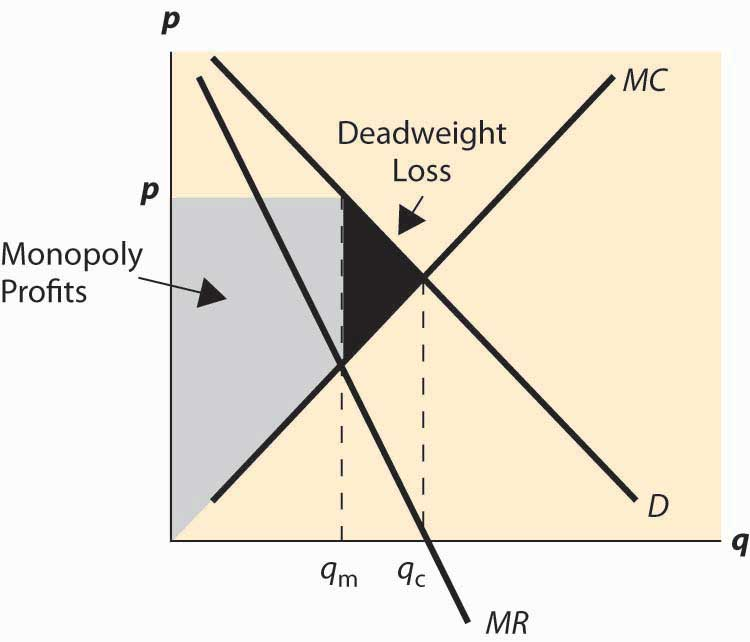

Even a monopoly is constrained by demand. A monopoly would like to sell lots of units at a very high price, but a higher price necessarily leads to a loss in sales. So how does a monopoly choose its price and quantity?
A monopoly can choose price, or a monopoly can choose quantity and let the demand dictate the price. It is slightly more convenient to formulate the theory in terms of quantity rather than price, because costs are a function of quantity. Thus, we let p(q) be the demand price associated with quantity q, and c(q) be the cost of producing q. The monopoly’s profits are
The monopoly earns the revenue pq and pays the cost c. This leads to the first-order condition for the profit-maximizing quantity qm:
The term is known as marginal revenueThe derivative of revenue pq with respect to quantity.. It is the derivative of revenue pq with respect to quantity. Thus, a monopoly chooses a quantity qm where marginal revenue equals marginal cost, and charges the maximum price p(qm) that the market will bear at that quantity. Marginal revenue is below demand p(q) because demand is downward sloping. That is,
Figure 15.1 Basic monopoly diagram
The choice of monopoly quantity is illustrated in Figure 15.1 "Basic monopoly diagram". The key points of this diagram are fivefold. First, marginal revenue lies below the demand curve. This occurs because marginal revenue is the demand p(q) plus a negative number. Second, the monopoly quantity equates marginal revenue and marginal cost, but the monopoly price is higher than the marginal cost. Third, there is a deadweight loss, for the same reason that taxes create a deadweight loss: The higher price of the monopoly prevents some units from being traded that are valued more highly than they cost. Fourth, the monopoly profits from the increase in price, and the monopoly profit is shaded. Fifth, since—under competitive conditions—supply equals marginal cost, the intersection of marginal cost and demand corresponds to the competitive outcome. We see that the monopoly restricts output and charges a higher price than would prevail under competition.
We can rearrange the monopoly pricing formula to produce an additional insight: or
The left-hand side of this equation (price minus marginal cost divided by price) is known as the price-cost marginPrice minus marginal cost over price. or Lerner Index.Abba Lerner (1903–1982). Note that which is used in the derivation. The right-hand side is one divided by the elasticity of demand. This formula relates the markup over marginal cost to the elasticity of demand. It is important because perfect competition forces price to equal marginal cost, so this formula provides a measure of the deviation from competition and, in particular, says that the deviation from competition is small when the elasticity of demand is large, and vice versa.
Marginal cost will always be greater than or equal to zero. If marginal cost is less than zero, the least expensive way to produce a given quantity is to produce more and throw some away. Thus, the price-cost margin is no greater than one; and, as a result, a monopolist produces in the elastic portion of demand. One implication of this observation is that if demand is everywhere inelastic (e.g., for a > 1), the optimal monopoly quantity is essentially zero, and in any event would be no more than one molecule of the product.
In addition, the effects of monopoly are related to the elasticity of demand. If demand is very elastic, the effect of monopoly on prices is quite limited. In contrast, if the demand is relatively inelastic, monopolies will increase prices by a large margin.
We can rewrite the formula to obtain
Thus, a monopolist marks up marginal cost by the factor at least when ε > 1. This formula is sometimes used to justify a “fixed markup policy,” which means that a company adds a constant percentage markup to its products. This is an ill-advised policy, not justified by the formula, because the formula suggests a markup that depends upon the demand for the product in question, and thus not a fixed markup for all products that a company produces.
Consider a monopolist with cost c = 3q.